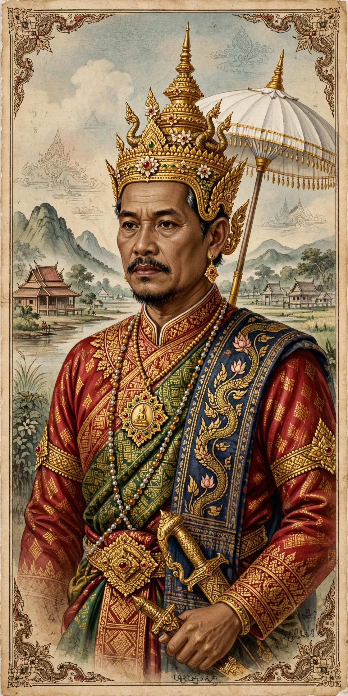

| Fa Ngum | |
|---|---|
| Reign | 1353–1373 |
| Kingdom | Lan Xang |
| Born | 1316, Muang Sua (Luang Prabang) |
| Died | 1393 (traditionally) |

Fa Ngum (1316–1393) was the founder of the Lao kingdom of Lan Xang, which he established in 1353. He is credited with unifying the Lao principalities and introducing Theravada Buddhism as the state religion.
Born at Muang Sua (modern Luang Prabang), Fa Ngum was exiled as a child to the Khmer court at Angkor, where he was raised and married a Khmer princess. With Khmer backing he returned north at the head of an army.
Between 1351 and 1354 he conquered Muang Sua, Vientiane and territories along the Mekong and into the Khorat Plateau, then was crowned at Vientiane in 1353. Lan Xang — the "Kingdom of a Million Elephants" — became a major regional power, and Fa Ngum brought the sacred Phra Bang Buddha image to his capital.
His demands for tribute and continuing campaigns alienated the court; he was deposed in 1373 and exiled to Nan, where he died. His son Samsenethai succeeded him. Fa Ngum remains a national hero in Laos, commemorated by a prominent statue in Vientiane.